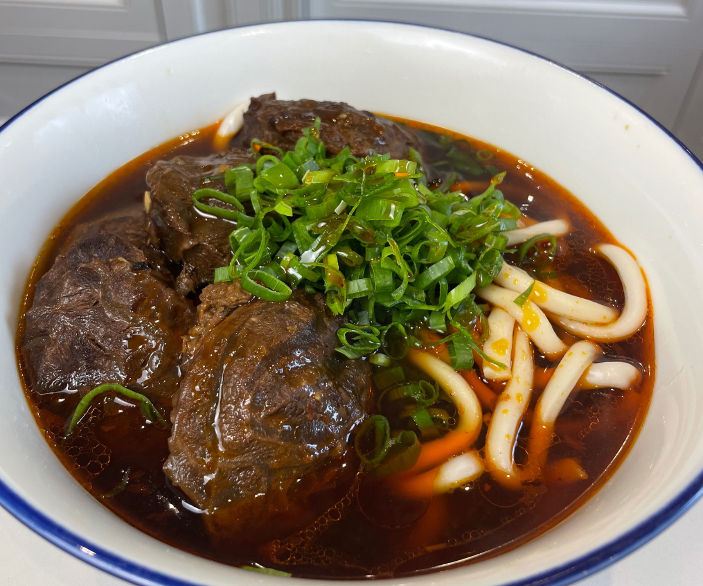

Right before the start of this semester, I took a trip with some friends
from my undergraduate university. We went to Italy and visited Milan,
Florence, and Rome. The highlight of my trip was seeing the Italian Grand
Prix, which is a Formula 1 race. As a fan of the Ferrari team, it was a ton
of fun getting to see them win the race on their home track. Also, out of
the three cities that I visited, I have to say that Florence was my favorite
since it was beautiful and had so much history to it without being as
chaotic as Rome.
Okan USA
This is my favorite restaurant because it offers affordable and authentic
Japanese food. I love to get their dinner sets, which come with a bowl of
rice, miso soup, a salad, and a protein of your choice. They also have some
classic Japanese street food options such as takoyaki or okonomiyaki. Lots
of variety without breaking the bank!

This is Taiwanese braised beef noodle soup and is my absolute all time
favorite dish. I like to eat it after a long session of work or on a cold
or rainy day. A traditional way of serving this dish (which I also enjoy)
is having some pickled mustard greens on the side. The acidity helps cut
into the richness of the beef broth. It is the ultimate comfort meal!